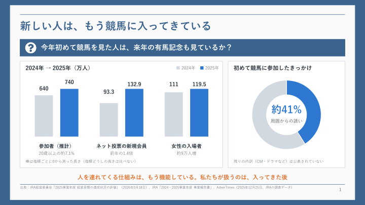
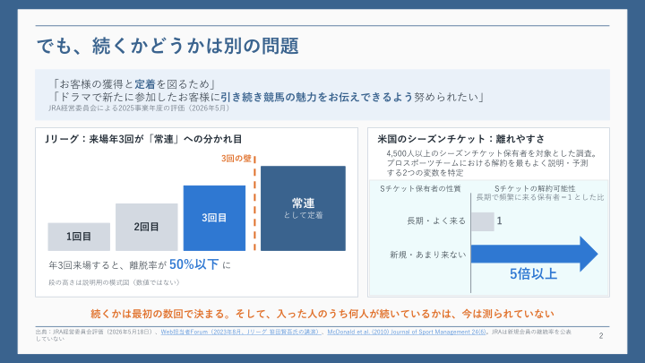
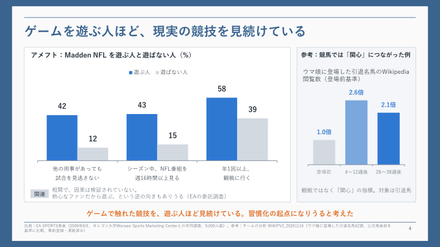
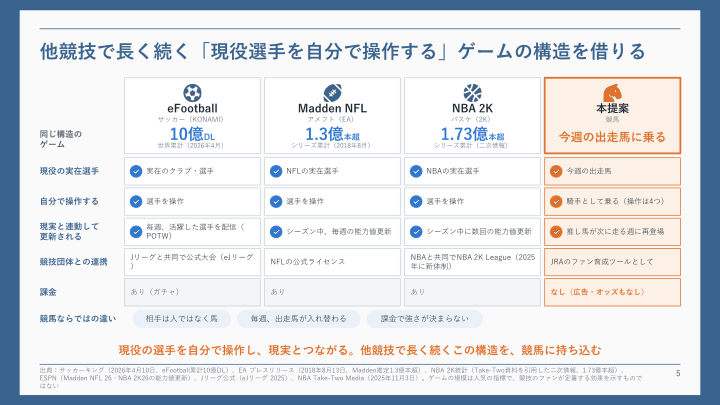
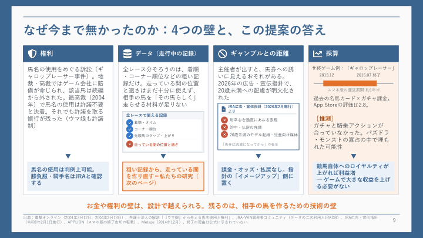
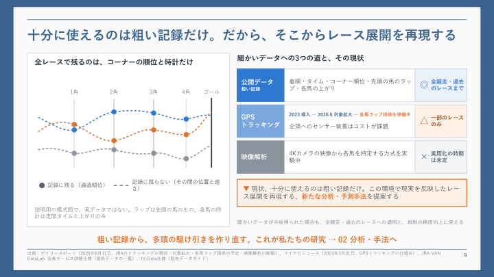

中間発表 2026.11.29
全馬の展開を描き直す競馬ゲーム
マルチエージェント軌跡予測を応用した展開生成モデル RaceWM
慶應義塾大学大学院 理工学研究科 鈴木研究室
深野夏生、田中大梧、西川輝星、鈴木秀男
1
中間発表 2026.11.29
全馬の展開を描き直す競馬ゲーム
マルチエージェント軌跡予測を応用した展開生成モデル RaceWM
慶應義塾大学大学院 理工学研究科 鈴木研究室
深野夏生、田中大梧、西川輝星、鈴木秀男










影響し合う複数の主体の、この先の動き（軌跡）を予測する手法
周りの車や歩行者を主体とみなし
この先の動きを同時に予測
例えば、交差点の車や歩行者が次にどう動くかを何通りも予測できる
出走馬を主体、コーナーごとの通過順位を軌跡とし、ゴールまでの順位とタイムを予測する
タイムと順位のつながりを保ったまま、全馬の展開を何通りも描く RaceWM を構築する
その結果、RaceWM はST より実際のレースに近い展開を描ける（STEP 04 で比べる）。
順位が分かるたびに描き直し、展開の広がりと勝つ確率の動きを 1 つのレースで描く
順位が分かるほど展開の束が絞られ、1着の馬番 14 が勝つ展開は8.6%から57.4%に増えた
全頭の最終順位の予測と展開の本物らしさの 2 つの物差しで、既存の手法と同じレースで比べる
順位の当たり具合は ST とほぼ同じ、展開の本物らしさは全段階で RaceWM が良い
ご清聴ありがとうございました
Thank You for Your Attention
着順の確率が同じでも、1 本の展開のつじつまで差が付く
1 回の描き直しは約 0.05 秒、操作した瞬間に反応できる